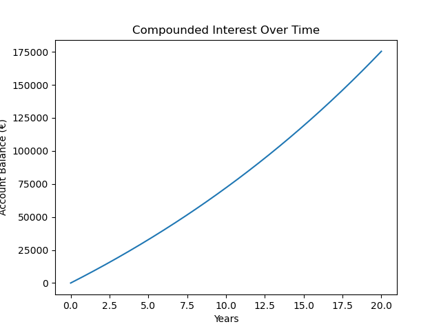
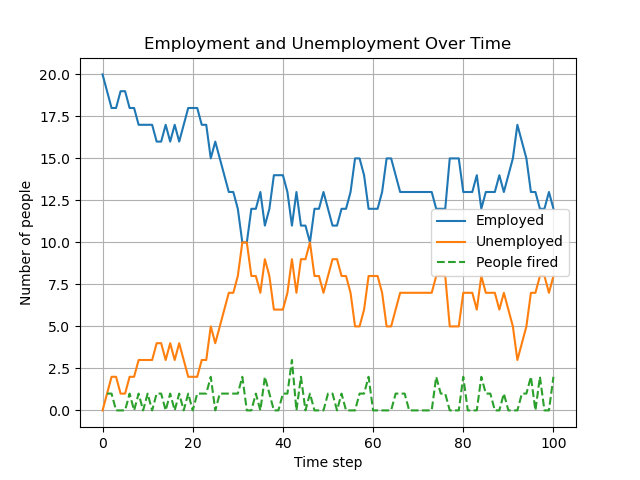
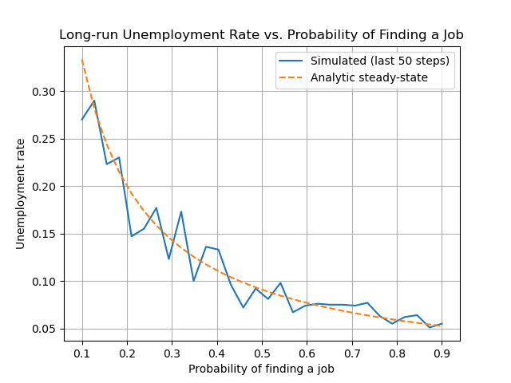
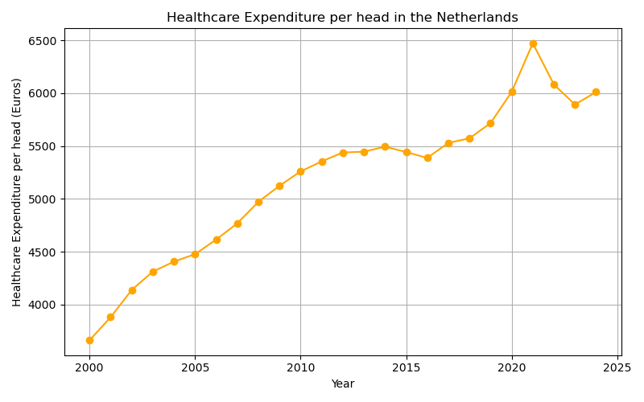
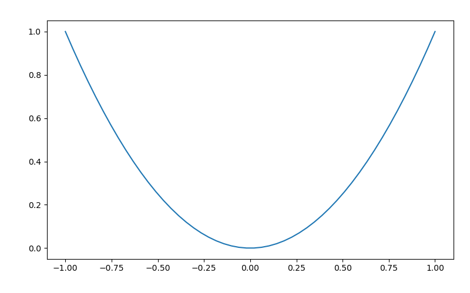
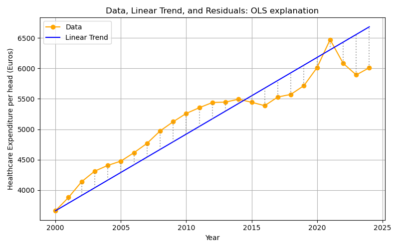
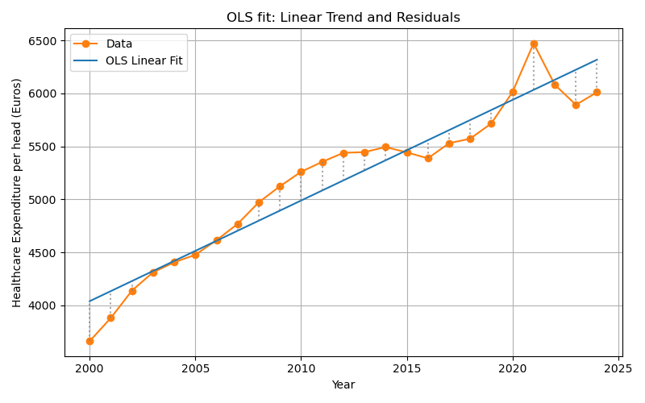
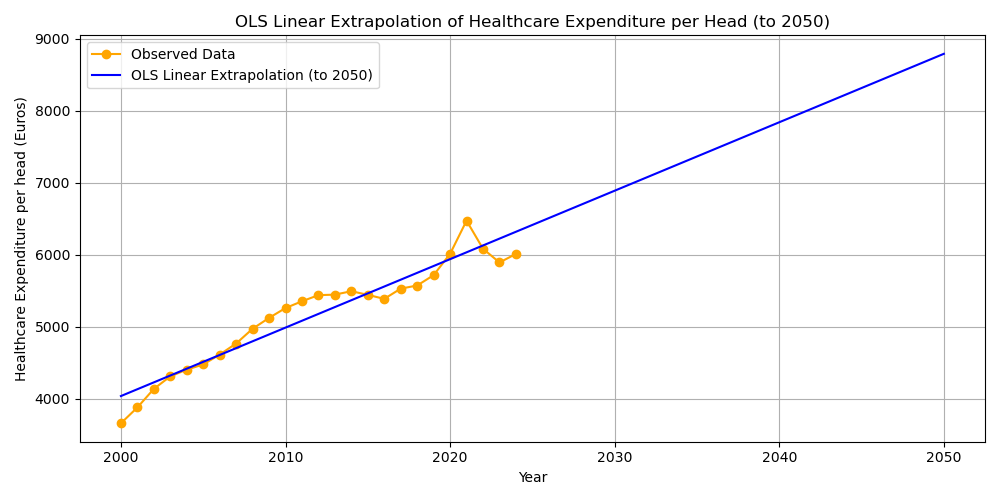
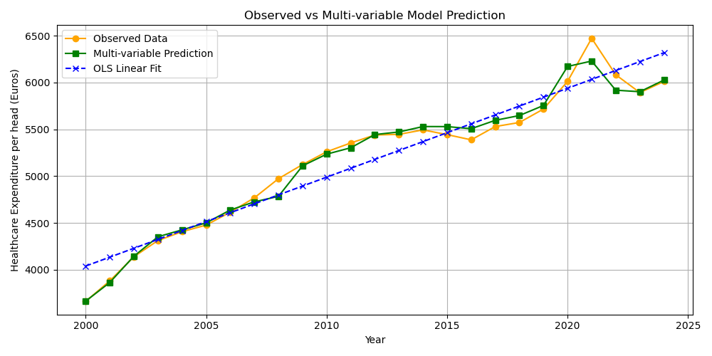
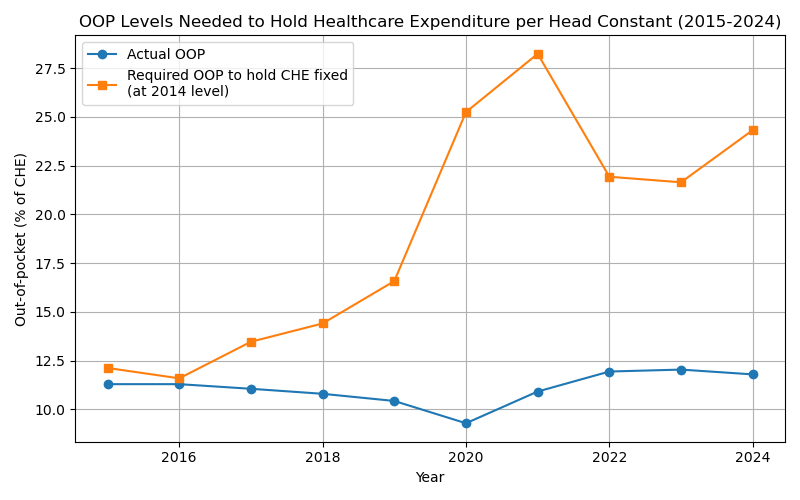

Lectures Methods: Python programming for economists
Table of Contents
- Introduction
- Lecture 1: The Power of Compounded Interest and Employment Dynamics
- Lecture 2: Healthcare expenditure
- App: Healthcare expenditure
- Python Code Explanation
- 1. Reading the data
- 2. Plotting the data
- 3. Defining a linear trend function
- 4. Fitting and visualizing the trend
- 5. Using optimization to find the best fit
- 6. Visualizing the optimal fit
- 7. Extending the model
- 8. Extrapolating the OLS Linear Trend to 2050
- 9. Multi-variable Regression: Adding GDP and OOP
- 10. Using a Numerical Solver (
fsolve) to Find Required OOP Levels - Summary of what the code does
- Review questions
Introduction
The idea of these lectures is to combine Python programing with economics. The overall goal is for you to acquire the skills to transfer information/knowledge to others (say, future colleagues) using more instruments than just written text.
Hence, we teach you how to use Python (learn the syntax) to solve economic models and then to create interactive apps to explain the intuition of these models. To explain how you can use these skills, we present all Python concepts in an economic context and show you how interactive elements can help the reader/user to gain the underlying economic intuition.
We start simple in lecture 1 with compound interest. Later you will learn how to solve for the equilibrium of models and do simulations. At the end you can solve differential equations.
The structure of each lecture is the same:
- explain the economic context
- show the intuition using an interactive notebook/app
- explain the python code that creates the app
- have some review questions
Our advice is to have this website open to read the information and next to it have your marimo notebook to make notes and program the interactive elements for the app. Most apps below are programed with streamlit which is very similar to marimo.
Lecture 1: The Power of Compounded Interest and Employment Dynamics
In this lecture we program two simple apps. First, we model compounded interest and then we model employment dynamics in a labor market. Along the way you learn the following Python concepts:
- variables
- lists and how to append lists
- for-loop
numpyandnumpyarrays, generating random numbers (e.g. from a binomial distribution)matplotlibto create figures- parameter sweep
Apps
This lecture introduces Python through two economic models:
- The Power of Compounded Interest: We model the growth of a bank account with regular deposits and compounded interest. This is analogous to the “falling coin” example in physics, but here we use an economic scenario.
- Modeling Employment and Unemployment: We model the employment status of 20 people in a village. Each person can be either employed or unemployed. At each time step, an employed person can lose their job (become unemployed) with a certain probability, and an unemployed person can find a job (become employed) with another probability.
You can experiment with both models in the interactive demos below.
Compounded interest
The following app illustrates how a lower monthly deposit can be “compensated” by a higher interest rate and lead to a higher final balance then a high monthly deposit with lower interest rate. Adjust the sliders by setting a relatively high deposit and low interest rate in scenario 1 and low deposit with high interest rate in scenario 2. Click the ’Calculate’ button to see how the balance develops over time in each scenario.
If the app does not load, open it in a new tab .
Employment dynamics
The following app illustrates how employment/unemployment evolves in a small town with 20 inhabitants. We start with full employment. With the sliders you can set the probability that an employee is fired (say, because her firm goes bankrupt) and the probability that an unemployed person is hired. Select the number of periods for which you want to run the simulation and click the ’Run Simulation’ button.
The second app illustrates a parameter sweep. This shows how sensitive an outcome is to the parameter value. In this case, we want to analyze the sensitivity of the long run unemployment level to the probability of finding a job. As this is a simple simulation model, we can actually derive the long run unemployment level analytically. The figure compares the simulated long run unemployment level with the analytic solution. For the probability of being fired chosen in the first app, clicking ’Sweep Parameter’ shows long run unemployment for different values of \(p_{hired}\).
If the app does not load, open it in a new tab .
Python Code Explanation
In this section we explain the Python code for the model itself, not yet for the interactive elements. In a next lecture we explain how to create sliders for parameters.
Compounded Interest Model
Let’s see how you can model the growth of a bank account with regular deposits and compounded interest in Python.
If you want to learn to program in Python, our advice is that you type the code below in your marimo notebook and run it. Then start to “play with it”: change things, experiment with the code. You cannot break anything and (mis)typing code, getting errors, using google or an LLM to understand the errors and change the code: this is how you learn to program. Just glancing over the code below and thinking you “understand things” is a waste of your time.
- 1. Set the parameters
We start by defining the monthly deposit, the monthly interest rate, and the number of months. Here, we use euros as the currency.
We do this by defining variables, like
deposit, and give these a value:deposit = 500 # euros per month rate = 0.003 # monthly interest rate (0.3%) months = 20 * 12 # 20 years
- 2. Initialize the balance and create an empty list
We start with a balance of zero. We also create an empty
listcalledbalancesto store the account balance at each month.In Python, a
listis a data structure that can hold an ordered collection of items. In Python a list is denoted by brackets[]. “Ordered” in the sense that the first element refers to the start balance, the second element to the balance one month after that etc. We use a list here so we can keep track of the balance after each month, which is useful for plotting the results later.balance = 0 balances = []
- 3. Simulate the account growth with a for loop
We use a
forloop to repeat the same calculation for each month. In each iteration, we first store the current balance in the list, then update the balance by adding the deposit and applying the interest.for m in range(months + 1):This loop runs once for each month, including month 0.balances.append(balance)This adds the current balance to the end of thebalanceslist.
for m in range(months + 1): balances.append(balance) balance = balance * (1 + rate) + deposit
- 4. Plot the results
We use
matplotlibto visualize the growth of the account over time.- for the code cell below we need to import two libraries
matplotlib,numpythat we use in the code. Staments likeimport numpy as npmean that we can accessnumpyfunctions likearangeby writingnp.arange - the
np.arangefunction takes three arguments: begin point, end point and step size; the end point is not included. In yourmarimonotebook: try different arguments in this function and see what the outcome is. years = np.arange(months + 1) / 12This creates a list of time points in years, matching the number of balances.plt.plot(years, balances)Theplotfunction takes two lists or arrays of equal length: the first for the x-axis, years, and the second for the y-axis, balances in euros.- By looking at the figure, you can probably infer what the functions
plt.xlabel, plt.ylabel, plt.titledo.
import matplotlib.pyplot as plt import numpy as np years = np.arange(months + 1) / 12 plt.plot(years, balances) plt.xlabel("Years") plt.ylabel("Account Balance (€)") plt.title("Compounded Interest Over Time");

Use an LLM to figure out what the following Python code does:
periods = months + 1 factors = np.power(1 + rate, np.arange(periods)) balances = deposit * np.cumsum(factors)
- for the code cell below we need to import two libraries
Employment Dynamics Model
Let’s break down the Python code for simulating employment and unemployment in a small village.
- 1. Set the parameters
We define the number of people, the probabilities, and the number of time steps. Copy this into your
marimonotebook and see what happens if you change the value of the variablen_peopleto, say, 1000.n_people = 20 p_fired = 0.05 # probability an employed person is fired each step p_hired = 0.10 # probability an unemployed person finds a job each step n_steps = 100
- 2. Initialize the state
We start with everyone employed. We create lists to store the number of employed and unemployed people at each time step.
employed = n_people unemployed = 0 employed_hist = [employed] unemployed_hist = [unemployed]
- 3. Simulate the process with a for loop
For each time step:
- For each employed person, we draw from a Bernoulli distribution to see whether they are fired. A Bernoulli distribution is equivalent to a binomial distribution with \(n=1\).
- For each unemployed person, we draw from a Bernoulli distribution to see whether they are hired.
- We update the counts and store them in the lists.
We use
np.random.binomial(n, p)to draw the number of successes, fired or hired, out ofnpeople, each with probabilityp.employed = employed - fired + hiredmeans that the new value ofemployed(left hand side) equals the previous value of this variable minus the people that are fired plus the hires this period.Above we have already seen the use of
appendto “add” a value to a list or an array.for t in range(n_steps): fired = np.random.binomial(employed, p_fired) hired = np.random.binomial(unemployed, p_hired) employed = employed - fired + hired unemployed = n_people - employed employed_hist.append(employed) unemployed_hist.append(unemployed)
- 4. Plot the results
We use
matplotlibto plot the number of employed and unemployed people over time.When you add a label to a
plt.plotorplt.scattercommand withlabel="Employed", you need to specifyplt.legend()to add the legend to the figure. With the latter function you can also determine where the legend will be added in the figure. Google or use an LLM to find out how that works. If you do not specify a position,matplotlibwill try to find the best placement itself.steps = np.arange(n_steps + 1) plt.plot(steps, employed_hist, label="Employed") plt.plot(steps, unemployed_hist, label="Unemployed") plt.xlabel("Time step") plt.ylabel("Number of people") plt.title("Employment and Unemployment Over Time") plt.legend() plt.grid(True)

- Summary of what the code does
- Step 1: Set the parameters for the simulation.
- Step 2: Initialize the state and lists to store the results.
- Step 3: Use a for loop to simulate each time step, updating the state using random draws from the binomial distribution.
- Step 4: Plot the results to visualize how employment and unemployment evolve over time.
This model demonstrates how randomness and probabilities can be used to simulate real-world economic processes in
Python.
- Summary of what the code does
Parameter Sweep: Long-run Unemployment Rate
A question when doing simulations is: how sensitive are the simulation results to the parameter values chosen. One way to get an idea of this sensitivity is to run the simulations for a sweep of parameter values. We illustrate this by analyzing long run or steady state unemployment. In the simulations we program long run unemployment as follows:
- we run the simulations for 200 periods; this ensures that the effect of the initial unemployment level disappears
- then we consider only the final 50 periods (that is period 150-200)
- and we take the average unemployment level over these 50 periods; because hiring and firing are stochastic processes, the outcome in one particular period is random. By taking the average over 50 periods, we average out these per period stochastic outcomes.
As the model is quite simple, we can actually derive the steady state unemployment level analytically. If you do not quite see how we got this expression, you can watch the following derivation:
- 5. Sweep code
Two points on the code:
- here we use
np.linspaceinstead ofnp.arange. Both functions achieve the same result with slightly different syntax. Google “numpy linspace” for details. - in a later lecture we will look into indexing of lists and arrays. For now:
unemployment_hist[-50:]refers to the final 50 entries in list/arrayunemployment_hist.
n_people = 20 n_steps = 200 p_fired = 0.05 # fixed probability of being fired sweep_p_hired = np.linspace(0.1, 0.9, 30) avg_unemp = [] analytic_unemp = [] for p_h in sweep_p_hired: employed = n_people unemployed = 0 unemployed_hist = [unemployed] for t in range(n_steps): fired = np.random.binomial(employed, p_fired) hired = np.random.binomial(unemployed, p_h) employed = employed - fired + hired unemployed = n_people - employed unemployed_hist.append(unemployed) # Average unemployment rate over last 50 steps avg_unemp.append(np.mean(unemployed_hist[-50:]) / n_people) # Analytic steady-state u_analytic = p_fired / (p_fired + p_h) analytic_unemp.append(u_analytic)
- here we use
- 6. Plotting the sweep results
plt.plot(sweep_p_hired, avg_unemp, label="Simulated (last 50 steps)") plt.plot(sweep_p_hired, analytic_unemp, '--', label="Analytic steady-state") plt.xlabel("Probability of finding a job") plt.ylabel("Unemployment rate") plt.title("Long-run Unemployment Rate vs. Probability of Finding a Job") plt.legend() plt.grid(True) plt.show()

- Summary of what the code does
- Step 1-4: Simulate the employment dynamics as before.
- Step 5: For a range of probabilities of finding a job, run the simulation and compute the average unemployment rate in the long run. Also compute the analytic steady-state unemployment rate:
\[ u = \frac{p_{\text{fired}}}{p_{\text{fired}} + p_{\text{hired}}} \]
- Step 6: Plot both the simulated and analytic results to compare.
Sweeping parameters is a powerful way to explore how a model behaves as you change its assumptions.
- Summary of what the code does
Review Questions
Test your understanding of the Python concepts and models from this lecture. Each question gives you some code and context. For each:
- Explain what the code does (think before you look at the hint).
- Complete the code in your own notebook.
Question 1: Predicting the Future Value
You want to predict the future value of a savings account after 10 years, but you only know the monthly deposit and the interest rate. You are given the following code fragment:
deposit = 100 rate = 0.004 months = 10 * 12 balance = 0 for m in range(months): # update balance here
- a. Without running the code, explain how the balance will grow over time.
- b. Write code to print the balance every year (not every month).
- c. How would you modify the code to allow for a one-time bonus deposit in month 24?
For this question you need to use an if statement. Google “if statements in python” or get help from an LLM to solve this.
Hint / Solution
- The balance grows faster and faster due to compounding: each month, interest is earned on the previous balance.
- To print the balance every year, use an
ifstatement inside the loop:if m % 12 == 0: print(m//12, balance) - To add a bonus in month 24:
if m == 24: balance += bonus
Question 2: Unemployment Fluctuations
Suppose you want to simulate unemployment in a village, but you want to track the longest streak of consecutive months where unemployment is above 5 people.
n_people = 20 employed = n_people unemployed = 0 p_fired = 0.05 p_hired = 0.10 longest_streak = 0 current_streak = 0 for month in range(months): # update employed and unemployed here if unemployed > 5: # update streaks here
- a. Explain how you would update
employedandunemployedeach month. - b. Complete the code to track the longest streak of high unemployment.
Hint / Solution
- Use random draws as before to update employment status.
- For streaks:
- If
unemployed > 5, incrementcurrent_streak. - If not, reset
current_streakto 0. - If
current_streak > longest_streak, updatelongest_streak.
- If
Question 3: Parameter Sweep Analysis
You want to analyze how the average unemployment rate (not steady state unemployment) changes as you sweep the probability of being fired.
Suppose you run a simulation for each value and store the results in a list called avg_unemp.
- a. How would you plot the results so that the x-axis shows the probability of being fired and the y-axis shows the average unemployment rate?
- b. Suppose the analytic solution does not match the simulation for very high or very low probabilities. List two possible reasons why.
Hint / Solution
- Use
plt.plot(p_fired_values, avg_unemp)wherep_fired_valuesis the list of probabilities you swept. - Possible reasons for mismatch:
- The simulation is too short to reach steady state for extreme probabilities.
- Random fluctuations are large in small populations, so the analytic solution (which assumes infinite population) is less accurate.
Lecture 2: Healthcare expenditure
App: Healthcare expenditure
If the app does not load, open it in a new tab .
Python Code Explanation
1. Reading the data
We use pandas to read the csv file with healthcare expenditure data for the Netherlands over the years 2000-2024. Here we just use the pd.read_csv= function, but with pandas you can also manipulate, clean data and merge dataframes. In the function call we specify the path where the csv file can be found: './data/gdp_healthcare_nl.csv'.
import pandas as pd df = pd.read_csv('./data/gdp_healthcare_nl.csv') df.head()
| Year | GDP_per_head | CHE_per_head | oop | |
|---|---|---|---|---|
| 0 | 2000 | 48561.827540 | 3660.652613 | 11.031692 |
| 1 | 2001 | 50301.690772 | 3879.911114 | 10.466823 |
| 2 | 2002 | 53515.311837 | 4137.932375 | 9.812201 |
| 3 | 2003 | 55703.272834 | 4311.324170 | 9.605323 |
| 4 | 2004 | 55797.445718 | 4405.689931 | 9.960184 |
The columns/variables in this dataframe df are the year of observation, GDP per head, healthcare expenditure per head and the percentage of healthcare expenditure that people pay out-of-pocket (oop).
2. Plotting the data
We use matplotlib to plot healthcare expenditure per head over time. Use google or an LLM to find out what plt.grid, plt.tight_layout do.
import matplotlib.pyplot as plt plt.figure(figsize=(8,5)) plt.plot(df.Year, df.CHE_per_head, marker='o', color='orange') plt.xlabel('Year') plt.ylabel('Healthcare Expenditure per head (Euros)') plt.title('Healthcare Expenditure per head in the Netherlands') plt.grid(True) plt.tight_layout()

3. Defining a linear trend function
Now we define our first function in Python. A function is a reusable block of code. Here, we define a function to compute a linear trend. We start with the keyword def specify the name of the function (which you are free to choose yourself but there are some restrictions on the name you choose) and then between parentheses ’()’ you specify the arguments of the function. That is, the variables that the function needs to calculate its results.
Here, the function has three arguments: years, intercept and slope. The function returns intercept + slope * (years - years.iloc[0]). Although this is not clear from the function definition, intercept and slope will be scalars and years is a vector (actually a pandas series). The syntax iloc[0] chooses the first element of this series. With df.Year as loaded from our data above, df.Year.iloc[0] equals 2000. The intercept equals linear_trend in the year 2000 and the trend slope applies to years \(> 2000\).
def linear_trend(years, intercept, slope): return intercept + slope * (years - years.iloc[0])
If you want to practice with defining (simpler) functions, do something like the following in your marimo notebook. Note that x**2 is Python syntax for \(x^2\).
def f(x): return x**2 range_x = np.linspace(-1,1,50) plt.plot(range_x,f(range_x));

4. Fitting and visualizing the trend
We plot the data, the linear trend, and the residuals (shown as vertical differences). Since the variable years is a vector, the function linear_trend returns a vector as well (a value for each year in years).
The Python syntax zip(years,che,trend) creates the combinations of the variables years,che,trend. After running the code block below in your marimo notebook (to make sure the variables are defined) you can evaluate for x, y, yhat in zip(years, che, trend): print(x, y, yhat) to see what zip does.
Finally, there is a new matplotlib command: plt.vlines: you give it three arguments: the \(x\) coordinate, the low value for \(y\) and high value for \(y\) between which a vertical line is drawn. linestyle=':' creates a dotted line.
years = df.Year che = df.CHE_per_head intercept = 3660.0 slope = 126.0 trend = linear_trend(years, intercept, slope) plt.figure(figsize=(8,5)) plt.plot(years, che, marker='o', label='Data', color='orange') plt.plot(years, trend, label='Linear Trend', color='blue') for x, y, yhat in zip(years, che, trend): plt.vlines(x, min(y, yhat), max(y, yhat), color='gray', linestyle=':', alpha=0.7) plt.xlabel('Year') plt.ylabel('Healthcare Expenditure per head (Euros)') plt.title('Data, Linear Trend, and Residuals: OLS explanation') plt.legend() plt.grid(True) plt.tight_layout()

5. Using optimization to find the best fit
Above we just chose some values for intercept and slope. Now we will try to find the values that give the best fit. We follow OLS in defining “best” as minimizing the sum of squared residuals.
We use scipy.optimize.minimize to find the intercept and slope that minimize the sum of squared residuals. We define the function rss which has as arguments the parameters (intercept and slope), the years (independent variable) and healthcare expenditure che as dependent variable. By specifying y = che (or years=years) in the function definition of rss we give the function default values: if we do not specify y (or years) in our function call, Python will work with the specified default values for these variable.
Within the function definition of rss we call the function linear_trend that we defined above. The function np.sum sums the vector in its argument. To see how this works, run the code np.sum(np.arange(4)) in your marimo notebook.
The function minimize from scipy expects (at least) two arguments: the function that needs to be minimized (rss in this case) and an initial guess for the parameters, x0. We specify our initial guess as intercept = slope = 0 via x0 = [0,0].
The outcome of the minimization routine is captured in the variable res. After running the following code block in your notebook, you can evaluate res. This variable res has the Python type dictionary and one of the keys is x: the x value where the function rss is minimized. It contains the optimal intercept and optimal slope.
from scipy.optimize import minimize import numpy as np def rss(params, years=years, y=che): intercept, slope = params yhat = linear_trend(years, intercept, slope) return np.sum((y - yhat) ** 2) res = minimize(rss, x0=[0, 0]) opt_intercept, opt_slope = res.x print(res.x)
[4038.28659643 95.0425062 ]
6. Visualizing the optimal fit
Now we can plot our data with the time trend that gives the best fit. To find the OLS regression line, we call our function linear_trend with the years variable and the optimal values opt_intercept, opt_slope.
opt_trend = linear_trend(years, opt_intercept, opt_slope) plt.figure(figsize=(8,5)) plt.plot(years, che, marker='o', label='Data', color='tab:orange') plt.plot(years, opt_trend, label='OLS Linear Fit', color='tab:blue') for x, y, yhat in zip(years, che, opt_trend): plt.vlines(x, min(y, yhat), max(y, yhat), color='gray', linestyle=':', alpha=0.7) plt.xlabel('Year') plt.ylabel('Healthcare Expenditure per head (Euros)') plt.title('OLS fit: Linear Trend and Residuals') plt.legend() plt.grid(True) plt.tight_layout() plt.show()

7. Extending the model
The fit of the OLS estimation is not bad. But we only used time (years) as explanatory variable. As healthcare is most likely a normal good, one would expect citizens to spend more on healthcare if they have higher incomes. On the macro level we can capture this with GDP per capita. Next to income, price is usually a determinant of expenditure on a good. Because the Netherlands has health insurance, people do not pay the full price of healthcare. But the deductible (part of healthcare expenditure that a patient pays her/himself) tends to reduce expenditure. Here we capture demand-side cost-sharing with the percentage that patients pay out-of-pocket (oop) for healthcare.
Below we will add these variables to our OLS regression to improve the fit.
8. Extrapolating the OLS Linear Trend to 2050
We can use the optimal OLS parameters to extrapolate the linear trend far into the future, for example to the year 2050. With the current information/data that we have, how much do we expect Dutch citizens to spend on healthcare (per capita) in 2050?
In order to predict (extrapolate) healthcare expenditure in 2050, we use our OLS regression line and substitute years till 2050 in the regression.
We define a new variable future_years starting from the first year (selecting using [] and index 0) and up till (but not including) 2051. Python starts counting at 0 and when specifying a range with range or np.arange the end point is not included.
Because we used the method iloc in our definition of linear_trend, we need to transform future_years into a pandas series.
future_years = np.arange(df.Year[0], 2051) future_years_df = pd.Series(future_years) future_trend = linear_trend(future_years_df, opt_intercept, opt_slope) plt.figure(figsize=(10,5)) plt.plot(df.Year, df.CHE_per_head, marker='o', label='Observed Data', color='orange') plt.plot(future_years, future_trend, label='OLS Linear Extrapolation (to 2050)', color='blue') plt.xlabel('Year') plt.ylabel('Healthcare Expenditure per head (Euros)') plt.title('OLS Linear Extrapolation of Healthcare Expenditure per Head (to 2050)') plt.legend() plt.grid(True) plt.tight_layout();

The model predicts that healthcare expenditure will be almost 9000 euros per capita in 2050. This is not necessarily a convincing prediction. First, it is not obvious that the trend should be linear. Perhaps the relation over time is concave (like \(\ln(x)\)) and grows more slowly than a linear function would suggest. If the relation is convex (like exponential growth) the situation will be (far) worse in 2050 in terms of public financing.
Second, the linear trend predicts healthcare expenditure growth that (most likely) exceeds GDP growth. This cannot be sustained by an economy and the government is likely to adopt measures to slowdown the growth in healthcare expenditure. One option is to increase demand-side cost-sharing. As people have to pay more out-of-pocket for healthcare treatments, they will tend to consume less.
9. Multi-variable Regression: Adding GDP and OOP
We can improve the fit of the model by including additional covariates: GDP per head and the percentage of healthcare expenditure paid out-of-pocket (oop).
def rss_multi(params, years=df.Year, gdp=df.GDP_per_head, oop=df.oop, y=df.CHE_per_head): intercept, slope_year, slope_gdp, slope_oop = params year_base = years - years.iloc[0] yhat = intercept + slope_year * year_base + slope_gdp * gdp + slope_oop * oop return np.sum((y - yhat) ** 2) init_params = [0, 0, 0, 0] res_multi = minimize( rss_multi, x0=init_params ) opt_intercept_m, opt_slope_year, opt_slope_gdp, opt_slope_oop = res_multi.x year_base = df.Year - df.Year.iloc[0] che_hat_multi = ( opt_intercept_m + opt_slope_year * year_base + opt_slope_gdp * df.GDP_per_head + opt_slope_oop * df.oop ) plt.figure(figsize=(10,5)) plt.plot(df.Year, df.CHE_per_head, marker='o', label='Observed Data', color='orange') plt.plot(df.Year, che_hat_multi, marker='s', label='Multi-variable Prediction', color='green') plt.plot(df.Year, opt_trend, marker='x', label='OLS Linear Fit', color='blue', linestyle='--') plt.xlabel('Year') plt.ylabel('Healthcare Expenditure per head (Euros)') plt.title('Observed vs Multi-variable Model Prediction') plt.legend() plt.grid(True) plt.tight_layout();

The fit is indeed better than the simple OLS linear trend.
10. Using a Numerical Solver (fsolve) to Find Required OOP Levels
Suppose the government wants to keep healthcare expenditure constant. How can we find, for each year 2015–2024, the level of oop needed to keep healthcare expenditure per head at the 2014 level.
We use scipy.optimize.fsolve to solve for oop numerically.
First, we define the years years_proj over which we need to derive oop to keep expenditure constant at the 2014 level che_2014. Then we select gdp_proj for these years. In pandas you can make a selection with the [] notation, e.g. df[df.Year==2014]. When testing whether a variables is equal to a value we use ’='; in Python '’ is used for variables assignment (x=5 sets the variable x equal to 5). When there is a range of values, we use the .isin method: select all years in the range years_proj.
As above, we choose the base year as the first year in our series (that is how we estimated our OLS regression).
We define a function oop_to_hold_che which returns the difference between our prediction of healthcare expenditure yhat and the expenditure level in 2014. We will try to find the oop level that sets this function equal to zero: the predicted expenditure equals the 2014 expenditure. oop_to_hold_che has two arguments: the oop level that we try to find and the year y for which we want to find the oop level.
Finally, the function fsolve needs as inputs: the function oop_to_hold_che that we want to set equal to zero and an initial guess for the solution. The function oop_to_hold_che has two arguments: oop and the year y that we are considering. We are not trying to choose y to set the function equal to zero. Hence, we need to tell Python explicitly that it should think of oop_to_hold_che as a function of oop only (for each year y).
One way to do this would be to have different function names for oop_to_hold_che for each year, like oop_to_hold_che_2017. But this would be tedious. A better way is to use Python’s “anonymous” functions. These are functions without a name. You can define an anonymous function using the lambda keyword. As a silly example you can evaluate (lambda x: x + 5)(8) to get an idea what a lambda function does.
We set oop_to_hold_che equal to zero for the years 2015-2024 and add these values of oop to the list oop_needed. Then we plot this list together with the observed values of oop in our data.
from scipy.optimize import fsolve che_2014 = df[df.Year == 2014]['CHE_per_head'] years_proj = np.arange(2015, 2025) gdp_proj = df[df.Year.isin(years_proj)]['GDP_per_head'].values year_base_proj = years_proj - df.Year.iloc[0] def oop_to_hold_che(oop_guess,y): yhat = ( opt_intercept_m + opt_slope_year * year_base_proj[y] + opt_slope_gdp * gdp_proj[y] + opt_slope_oop * oop_guess ) return yhat - che_2014 oop_needed = [] for y in range(len(years_proj)): oop_init = df.oop[0] required_oop = fsolve(lambda x: oop_to_hold_che(x,y), oop_init) oop_needed.append(required_oop[0]) oop_data = df[df.Year.isin(years_proj)]['oop'].values plt.figure(figsize=(8,5)) plt.plot(years_proj, oop_data, marker='o', label='Actual OOP') plt.plot(years_proj, oop_needed, marker='s', label='Required OOP to hold CHE fixed\n(at 2014 level)') plt.xlabel('Year') plt.ylabel('Out-of-pocket (% of CHE)') plt.title('OOP Levels Needed to Hold Healthcare Expenditure per Head Constant (2015-2024)') plt.legend() plt.grid(True) plt.tight_layout();

Summary of what the code does
- Reading the data: Load the healthcare expenditure, GDP per head, and out-of-pocket (oop) data into a
pandasdataframe. - Plotting the data: Visualize healthcare expenditure per head over time using
matplotlib. - Defining a linear trend function: Create a Python function that computes a linear trend given years, intercept, and slope.
- Fitting and visualizing the trend: Plot the data, an example linear trend, and show residuals (vertical differences between data and trend).
- Using optimization to find the best fit: Use
scipy.optimize.minimizeto find the intercept and slope that minimize the sum of squared residuals (OLS fit). - Visualizing the optimal fit: Plot the data and the resulting OLS regression line with residuals.
- Extending the model: Discuss that only using time is limited and that other variables like income (GDP per head) and patient payments (oop) may matter.
- Extrapolating the OLS Linear Trend to 2050: Use the OLS results to predict future healthcare expenditure up to 2050 and plot the (possibly unrealistic) extrapolation.
- Multi-variable Regression: Improve the fit by adding GDP per head and oop as covariates in a multi-variable regression, and compare the fitted values to the data and simple trend.
- Using a Numerical Solver (
fsolve): For each future year, usefsolveto determine the oop needed to keep expenditure constant at 2014 levels, plot the required vs. actual oop, and discuss the relevance for policy.
Review questions
Question 1: Create Your Own Multi-variable Regression
Fit a new regression model that predicts healthcare expenditure per head using only GDP per head (not year or oop). Plot the predicted values versus the actual data. How does the fit compare to the simple linear trend?
Hint / Solution
Define a function like:
def rss_gdp(params, gdp=df.GDP_per_head, y=df.CHE_per_head): intercept, slope_gdp = params yhat = intercept + slope_gdp * gdp return np.sum((y - yhat) ** 2)- Use
minimize()to find the optimal coefficients. - Plot observed data and predicted values from this GDP-only model.
- Compare visually to the linear time trend fit.
—
Question 2: Use fsolve to Find the GDP Needed to Keep Expenditure Constant
Suppose you want to know, for a certain year (e.g., 2024), what value of GDP per head would keep healthcare expenditure fixed at its 2014 level, holding all else constant. Write a function and use fsolve to solve for this GDP value using your multi-variable model.
Hint / Solution
- Use your multi-variable coefficients from the previous regression (e.g., with GDP, OOP and year).
- For the selected year, plug in all other variables (year and oop) as they are in the data; solve for the value of GDP that sets the model prediction equal to the 2014 expenditure level.
Your function for
fsolveshould look like:def gdp_to_hold_che(gdp_guess): yhat = intercept + slope_year * (year - base_year) + slope_gdp * gdp_guess + slope_oop * oop return yhat - che_2014- Try different initial guesses and run
fsolve(gdp_to_hold_che, gdp_init).